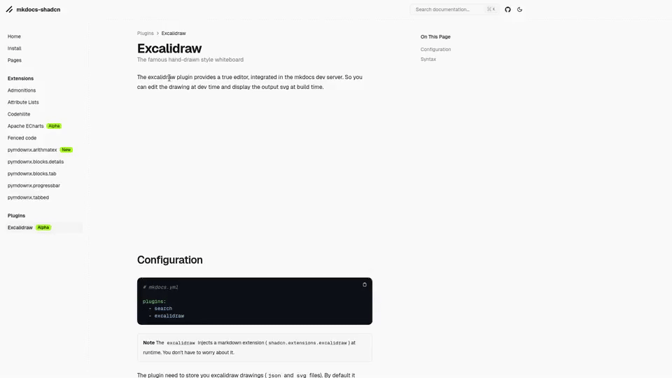

Excalidraw
The famous hand-drawn style whiteboard
The excalidraw plugin provides a true editor, integrated in the mkdocs dev server. So you can edit the drawing at dev time and display the output svg at build time.

[CONFIGURATION]
1 2 3 4 5 | |
Note
The excalidraw injects a markdown extension (shadcn.extensions.excalidraw) at runtime. You don't have to worry about it.
The plugin need to store you excalidraw drawings (json and svg files). By default it stores these files under excalidraw/. So you are likely to have this layout:
1 2 3 4 5 6 7 8 9 | |
You can change this folder with the directory option (the path is relative to the root directory, i.e. the directory where mkdocs.yml lives).
1 2 3 4 5 6 | |
[SYNTAX]
The path to the json file is relative to the directory provided to the plugin. The title is injected as build time through a <title></title> tag inside the output svg file.
:::md
~{title}(path/to/file.json)